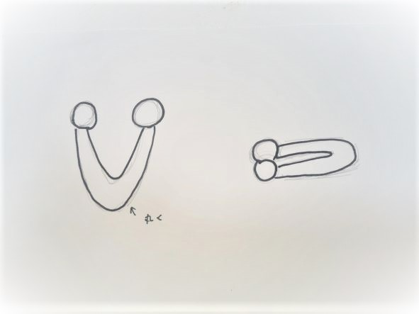
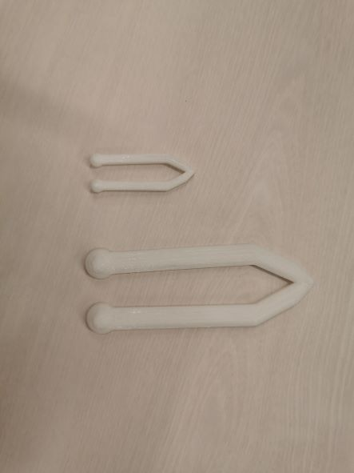

掴みにくい？ピンセット
作品タイトル
ベビー用ピンセット
構想スケッチ

完成品

左が完成品
右は大きく作りすぎ、課題の規定サイズを超えた。
設計ファイル
stlファイル
作品説明
用途 → 知育玩具
あえてつかみずらいように先を丸くし
子供の指先や手の動きの練習になるようにした。
また尖ったところを作らないことで少しでも安全に使用できるようにした。
反省点
今回の課題での既定のサイズでは小さすぎた
挟める幅が小さくつかみにくい
子供が使うには硬すぎるかもしれない
作ったわけ
親戚に幼い子がおり、この課題をするにあたって
その子に何か作ってあげられないかと考えた
そこで知育玩具の作成を思いつき、このデザインで作成した。
作成プロセスで調べたこと
調べたこと
小さすぎるものや細すぎるものは作れない
サーフェスだと表面しか作れない
２つのイラストをつなげたければ同じところでイラストする
使用動画
使ってほしい年齢の人が近くにいなかった
このサイズのピンセットでつかめるものがなかった
この二つの理由から撮影することが出来なかった。